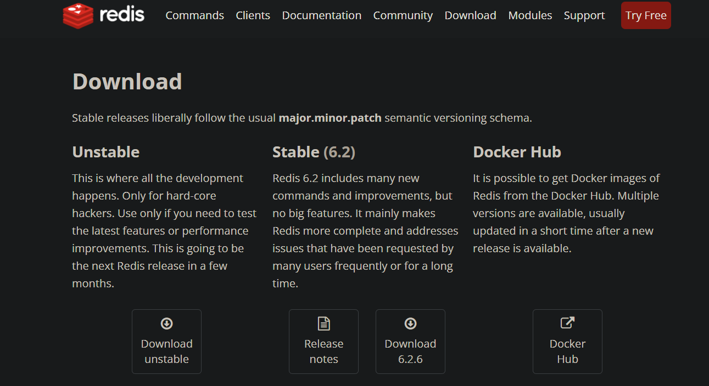
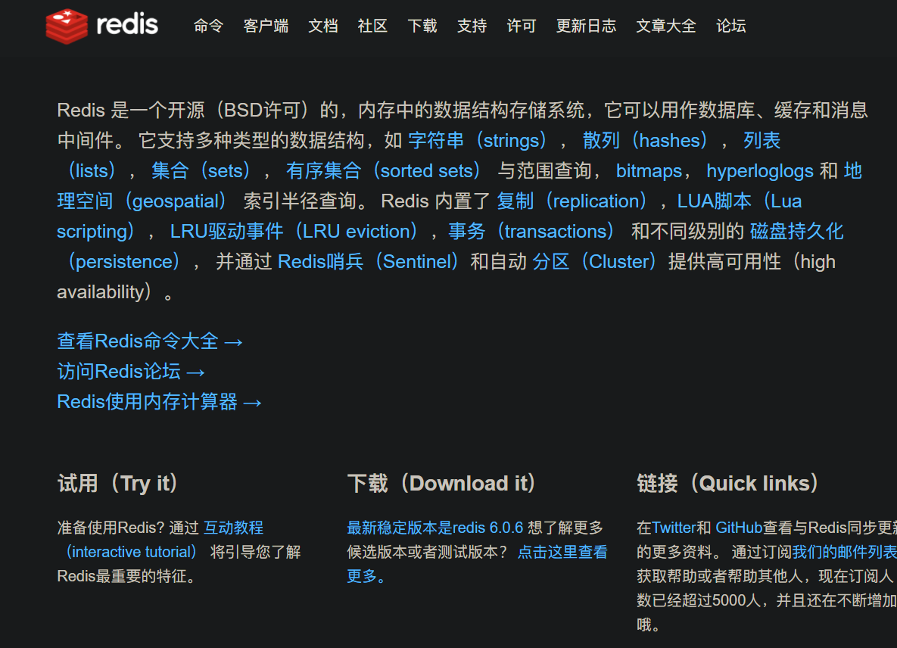
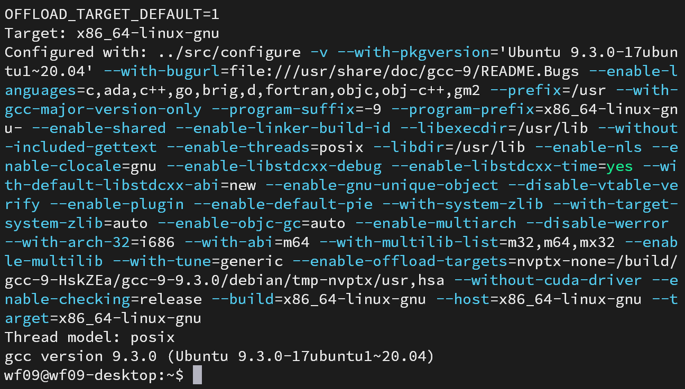
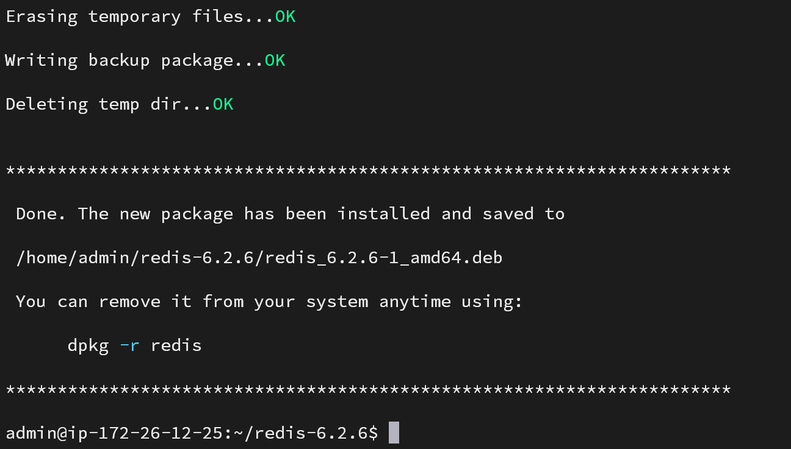
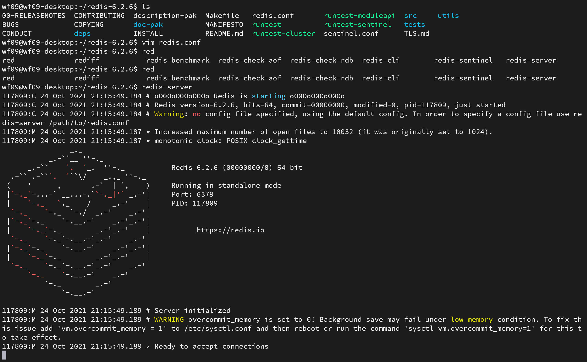
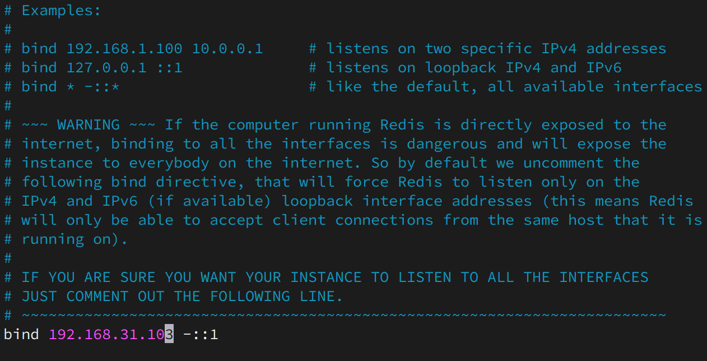
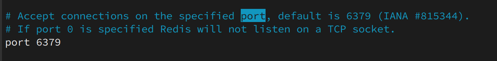
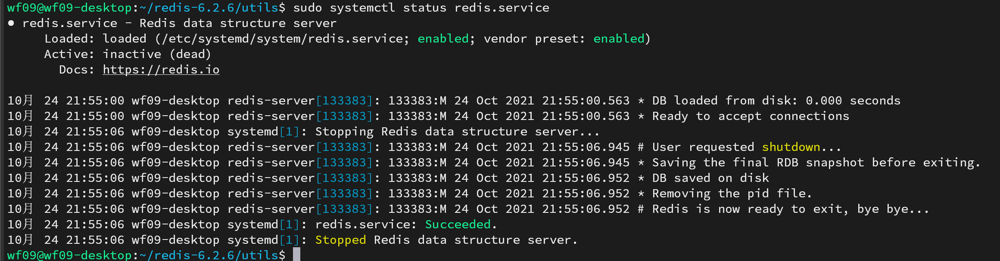

ubuntu2004安装最新版本Redis并设置开机启动
本文主要介绍了如何在Ubuntu2004上安装最新版本的Redis以及如何设置Redis开机自动启动。
关键词：Redis，Linux
官方网站

中文网
注意，中文网的版本要比官方的版本要低

下载并安装
这里选择的官网下载的版本。
1 | wget https://download.redis.io/releases/redis-6.2.6.tar.gz |
直接安装编译好的版本
解压
1 | tar -zxvf redis-6.2.6.tar.gz |
编译安装
首先查看gcc版本
1 | gcc -v |

太旧的版本可能需要升级才能安装。这里用的是ubuntu20 04 LTS。
尝试编译
1 | make |
有可能出现的问题
1 | zmalloc.h:50:10: fatal error: jemalloc/jemalloc.h: |
解决方法
- 使用以下命令进行编译
1 | make MALLOC=libc |
安装jemalloc
打包成deb包
为什么要打包成deb包呢？可以方便后续卸载等其他操作。
首先安装checkinstall
1 | sudo apt install checkinstall -y |
执行打包命令
1 | sudo checkinstall -y |
打包完成

如果想卸载就执行执行
1 | sudo dpkg -r redis |
检测是否安装完毕
运行
1 | redis-server |

如有上图显示则说明运行成功
后续的配置
配置文件
将配置文件移动到系统目录下
1 | mkdir /etc/redis |
1 | mv redis.conf /etc/redis/ |
修改监听IP
1 | vim redis.conf |

修改端口
1 | vim redis.conf |

设置开机自启动
将redis使用service进行管理
1 | touch redis.service |
redis.service文件的格式如下：
1 | [Unit] |
将redis.service移动到系统目录下
1 | mv redis.service /etc/systemd/system/redis.service |
设置自启动
1 | sudo systemctl enable redis.service |
查看是否启动成功
1
sudo systemctl status redis.service

完。